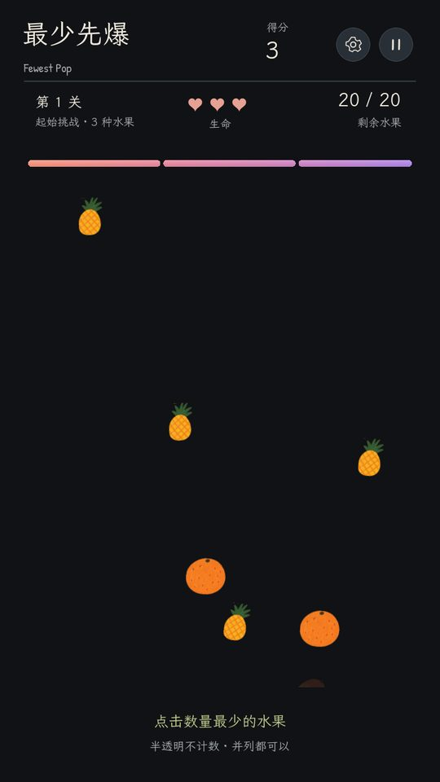
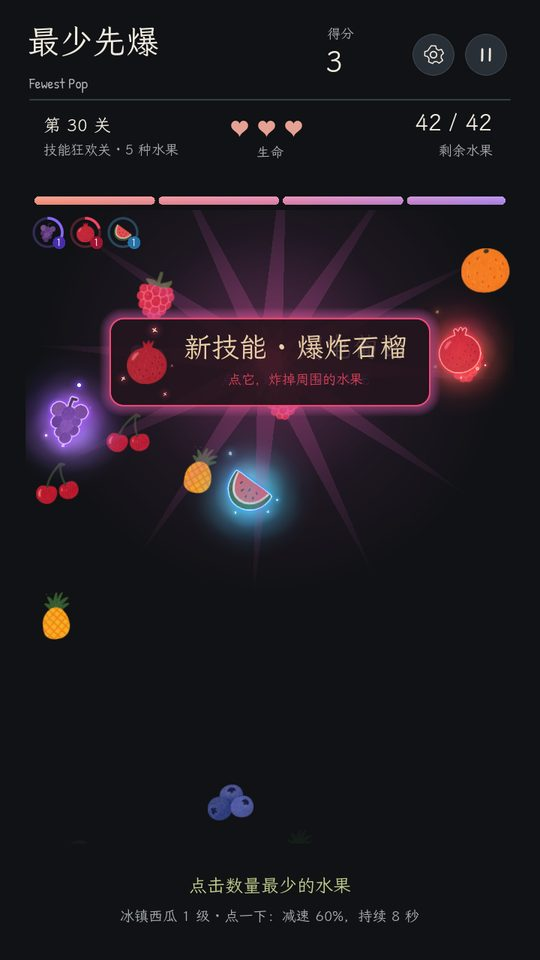
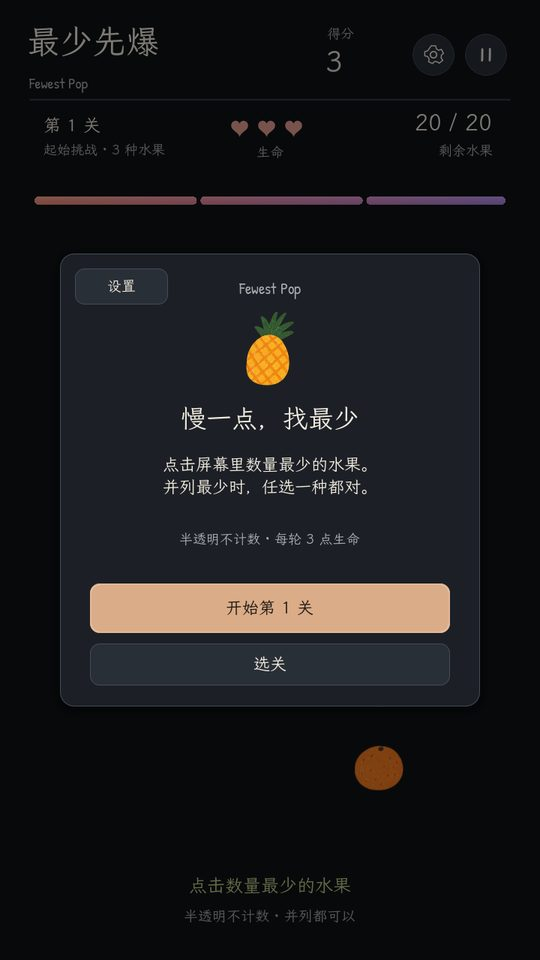

Fewest Pop / 最少先爆
Tap the fewest fruit · 点击最少的水果
水果从屏幕上方缓缓落下，点击完整可见、数量最少的那一种。数量并列时任选一种都对。每关 3 点生命，点错扣 1 点。
Fruit drifts down the screen. Tap the fully visible kind there are fewest of; when kinds tie, any of them is right. Each level gives three lives, and a wrong tap costs one.
- 从第 0 关开始 · Easy start一段简短的新手教学，然后每 10 关一组，组内逐渐变难。
A short lesson, then groups of ten levels that build up. - 五种技能水果 · Five skills闪电葡萄、爆炸石榴、冰镇西瓜、爱心草莓、流星杨桃，点了一定生效。
Lightning grape, blast pomegranate, ice watermelon, heart strawberry and meteor starfruit. - 技能狂欢关 · Skill parties每组第 10 关，技能水果一直出现，解锁新技能。
Every tenth level is a party where skill fruit keep coming. - 安心游玩 · Play in peace无需账号，离线游玩，没有广告，没有内购。
No account, offline, no ads, no in-app purchases.



联系我们 / Contact
开发团队 / Developer：Tessecos Studio
支持邮箱 / Support email：tessecos@gmail.com